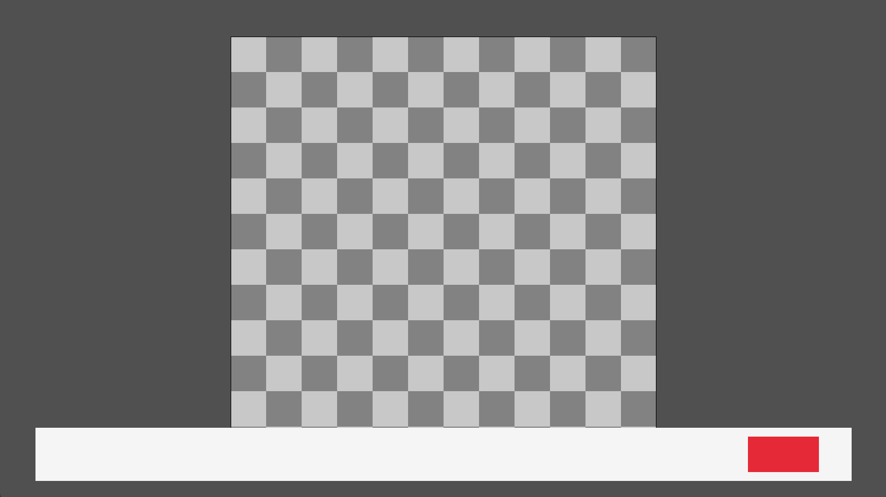
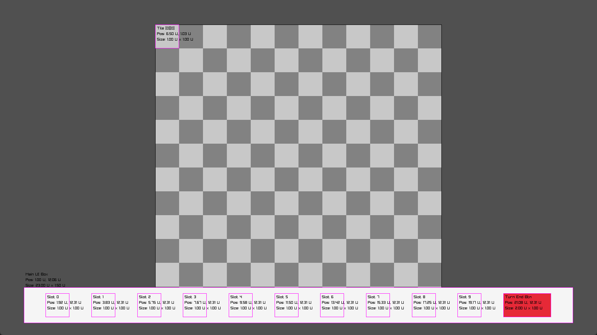

Dragonic Tactics
A tactical game with maps and characters I designed by hand. Enemy behavior and combat decisions were mapped out in detailed AI flowcharts before I wrote a line of code.
Key Features
- Hand-designed maps and roster for grid-based tactical combat
- Enemy AI authored as flowcharts before a single line of code was written
- Reshapeable terrain you can change mid-battle to shift the tactical situation
My Role
As part of my team, CodePistols:
- Core system mechanics, map layouts, and character concepts
- AI flowcharts defining enemy behavior and decision-making
Controls
- Mouse — select, move, and attack (the primary control scheme)
- Menus & settings: WASD / arrow keys to navigate, Enter to confirm (mouse also works)
Core Loop
Position your squad on the grid, trade attacks with enemies whose decisions follow AI flowcharts I wrote in advance, and reshape terrain mid-fight to open or close off lanes.
Why
I wanted a tactics game where the terrain itself is part of the puzzle — reshaping the field mid-fight matters as much as your units' stats, so a strong opening position doesn't just stay strong all game.
Design
Enemy AI flowcharts and the spell numbers behind them.
Enemy AI Flowcharts
The actual decision flowcharts I wrote for each class before implementing any AI code. Click a diagram to zoom in.
Cleric
flowchart TD
Start(["Cleric turn start"]) --> Init["Initialize state <br/> (check MP/AP/available slots)"]
%% [Step 1: guaranteed-kill sequence]
Init --> CheckKill{"[Priority 1] Guaranteed kill possible?"}
CheckKill -- "Yes" --> Kill_Loop
subgraph Kill_Loop ["Maximum Firepower Loop"]
K_Move{"Adjacent?"} -- No --> K_MP{"MP > 0?"}
K_MP -- Yes --> K_DoMove["Move (MP-1)"] --> K_Move
K_MP -- No --> Phase_Decision
K_Move -- Yes --> K_AP{"AP > 0?"}
K_AP -- Yes --> K_Slot{"Slot available?"}
K_Slot -- No --> K_Norm["Basic attack (AP-1)"] --> K_AP
K_AP -- No --> End_K(["End turn"])
end
%% [Step 2: decision point / support-combat switch]
CheckKill -- No --> Phase_Decision
Phase_Decision(("Decision point")) --> HasAP{"AP > 0?"}
HasAP -- No --> End(["End turn"])
%% [Step 3: priority-based action]
HasAP -- Yes --> CheckHeal{"[Priority 2] Heal needed?"}
%% Heal section
CheckHeal -- "Yes (HP low)" --> CanHeal{"Slot available?"}
CanHeal -- Yes --> HealAct["Cast Heal (AP-1, Slot-1)"] --> Phase_Decision
CanHeal -- No --> MeleePhase
%% No slot left -> fall back to attacking
%% Buff/debuff and basic attack section
CheckHeal -- No --> CheckRes{"Slots remaining?"}
%% Only try buff/debuff if slots remain
CheckRes -- Yes --> SupportLogic{Buff/debuff needed?}
SupportLogic -- Yes --> ExecuteSupport["Cast spell (AP-1, Slot-1)"] --> Phase_Decision
SupportLogic -- No --> MeleePhase
%% No slots left or nothing to do -> melee attack no matter what
CheckRes -- No --> MeleePhase
subgraph MeleePhase ["Basic Attack Process"]
M_Adj{"Adjacent to dragon?"} -- No --> M_Move{"MP > 0?"}
M_Move -- Yes --> M_DoMove["Move toward dragon (MP-1)"] --> M_Adj
M_Move -- No --> Phase_Decision
M_Adj -- Yes --> M_Atk["Basic attack (AP-1)"] --> Phase_Decision
end
%% [Step 4: wrap-up]
Phase_Decision --> HasMP{"No AP left, but <br/> MP remaining?"}
HasMP -- Yes --> TacticalMove["Reposition for next turn"] --> End
HasMP -- No --> EndFighter
flowchart TD
Start(["Fighter turn start"]) --> InitVars["Initialize state variables: <br/> [HasAttacked = False]"]
InitVars --> CheckKillDist{"A* pathfind: <br/> reachable this turn?"}
CheckKillDist -- Yes --> CheckKillHP{"Can guarantee dragon kill? <br/> (sum of available slot damage)"}
CheckKillHP -- Yes --> Kill_Loop
CheckKillDist -- No --> Phase_Decision
CheckKillHP -- No --> Phase_Decision
subgraph Kill_Loop ["Maximum Firepower Loop"]
K_Reach{"Adjacent?"} -- No --> K_CanMove{"MP > 0?"}
K_CanMove -- Yes --> K_DoMove["Move (MP-1)"] --> K_Reach
K_CanMove -- No --> Phase_Decision
K_Reach -- Yes --> K_AP{"AP > 0?"} -- Yes --> K_BestSlot{"Find best slot <br/> for enemy HP"}
K_BestSlot -- "has slot" --> K_Smite["Smite (AP-1) <br/> [upcast to avoid overkill]"] --> K_AP
K_BestSlot -- "no slot" --> K_Norm["Basic attack (AP-1)"] --> K_AP
K_AP -- No --> End_K(["End turn"])
end
Phase_Decision(("Decision point")) --> CheckAP{"Remaining AP > 0?"}
CheckAP -- No --> End(["End turn"])
CheckAP -- Yes --> CheckReach{"Adjacent to dragon (1 tile)?"}
CheckReach -- No --> CanMove{"MP > 0 & A* path exists?"}
CanMove -- Yes --> Act_Move["Move (MP-1)"] --> Phase_Decision
CanMove -- No --> CheckFearFar{"Dragon not feared & has level-1 slot <br/> & within fear range?"}
CheckFearFar -- Yes --> Act_FearFar["Fearful Cry (AP-1)"] --> End
CheckFearFar -- No --> End
CheckReach -- Yes --> CheckHP{"HP <= 40%?"}
CheckHP -- Yes --> HasBloodlust{"'Bloodlust' active?"}
HasBloodlust -- No --> CheckBloodSlot{"Has level-2 slot?"}
CheckBloodSlot -- Yes --> Act_Bloodlust["Cast Bloodlust (AP-1) <br/> (lifesteal from next attack)"] --> Phase_Decision
CheckBloodSlot -- No --> CheckFearNear{"Dragon not 'feared'?"}
HasBloodlust -- Yes --> CheckHealSlot{"Has slot for Smite?"}
CheckHealSlot -- "has slot" --> Act_HealSmite["Smite (AP-1) <br/> [upcast to maximize lifesteal]"] --> Phase_Decision
CheckHealSlot -- "no slot" --> Act_NormalLoop["Basic attack (AP-1) <br/> (heals via Bloodlust)"] --> Phase_Decision
CheckHP -- No --> CheckBless{"'Bless' active?"}
CheckBless -- Yes --> HasBurst{"'Frenzy' buff active?"}
HasBurst -- No --> CheckBurstAP{"Remaining AP >= 2?"}
CheckBurstAP -- Yes --> Act_Burst["Cast Frenzy (AP-1)"] --> Phase_Decision
CheckBurstAP -- No --> CheckSmiteSlot
HasBurst -- Yes --> CheckSmiteSlot
CheckSmiteSlot{"Has attack slot?"} -- "has slot" --> Act_UpSmite["Smite (AP-1) <br/> [consume highest available level]"] --> Phase_Decision
CheckSmiteSlot -- "no slot" --> Act_NormalLoop["Basic attack (AP-1)"] --> Phase_Decision
CheckBless -- No --> CheckCleric{"Cleric alive?"}
CheckCleric -- Yes --> CheckFearNear
CheckFearNear -- "Yes (not feared)" --> CheckFearSlot{"Has level-1 slot & <br/> within fear range?"}
CheckFearSlot -- Yes --> Act_Fear["Fearful Cry (AP-1)"] --> Phase_Decision
CheckFearSlot -- No --> Act_NormalLoop
CheckFearNear -- "No (already feared)" --> Act_NormalLoop
CheckCleric -- No --> HasIndBurst{"'Frenzy' active?"}
HasIndBurst -- No --> Check2ndSlot{"Has level-2 slot & <br/> AP >= 2?"}
Check2ndSlot -- Yes --> Act_IndBurst["Cast Frenzy (AP-1)"] --> Phase_Decision
Check2ndSlot -- No --> CheckFearNear
HasIndBurst -- Yes --> CheckSmiteSlotRogue
flowchart TD
Start(["Rogue turn start"]) --> InitVars["Initialize state variables: <br/> [HasAttacked = False]"]
InitVars --> CheckKill{"Is a dragon kill lined up? <br/> (stealth 2x & verify A* path)"}
CheckKill -- Yes --> Kill_Loop
subgraph Kill_Loop ["Max-Damage Barrage Loop"]
K_Reach{"Adjacent?"} -- No --> K_CanMove{"MP > 0 & <br/> A* path exists?"}
K_CanMove -- Yes --> K_DoMove["Move (A*)"] --> K_Reach
K_CanMove -- No --> Phase_Decision
K_Reach -- Yes --> K_AP{"AP > 0?"} -- Yes --> K_Cond{"Has level-2 slot?"}
K_Cond -- Yes --> K_Weak["Weakpoint Strike (Slot-1)"] --> K_AP
K_Cond -- No --> K_Norm["Basic attack"] --> K_AP
K_AP -- No --> Phase_Decision
end
CheckKill -- No --> HasHasteBuff{"Already 'Haste'd?"}
HasHasteBuff -- No --> CheckHasteSlot{"Has level-1 slot?"}
CheckHasteSlot -- Yes --> IsHasteMeaningful{"Is Haste worth it? <br/> (low MP or spare AP)"}
IsHasteMeaningful -- Yes --> Act_Haste["Cast Gale Step <br/> (AP-1, AP+1, MP+1)"] --> Phase_Decision
HasHasteBuff -- Yes --> Phase_Decision
CheckHasteSlot -- No --> Phase_Decision
IsHasteMeaningful -- No --> Phase_Decision
Phase_Decision(("Decision point")) --> CheckAP{"Remaining AP > 0?"}
CheckAP -- No --> End(["End turn"])
CheckAP -- Yes --> CheckReach{"Adjacent?"}
CheckReach -- No --> CanMove{"MP > 0 & <br/> A* path exists?"}
CanMove -- Yes --> Act_Move["Move (along A* path)"] --> Phase_Decision
CanMove -- No --> CheckAttackedFar{"[HasAttacked] == False <br/> & not stealthed?"}
CheckAttackedFar -- Yes --> Act_StealthFar["Shadow Hide (AP-1)"] --> End
CheckAttackedFar -- No --> End
CheckReach -- Yes --> CheckStealth_Combat{"Currently stealthed?"}
CheckStealth_Combat -- Yes --> CheckWeakSlot{"Has level-2 slot?"}
CheckWeakSlot -- Yes --> Act_Weak["Weakpoint Strike (2x) <br/> [HasAttacked = True] <br/> [break stealth]"] --> Phase_Decision
CheckWeakSlot -- No --> ShouldIBreakStealth{"Worth breaking stealth <br/> with a basic attack?"}
ShouldIBreakStealth -- Yes --> Act_NormStealth["Basic attack (2x) <br/> [HasAttacked = True] <br/> [break stealth]"] --> Phase_Decision
ShouldIBreakStealth -- No --> Repo_Move{"MP > 0?"}
Repo_Move -- Yes --> Act_Repo["Reposition move"] --> Repo_Move
Repo_Move -- No --> End_Stealth(["End turn (stay stealthed)"])
CheckStealth_Combat -- No --> CheckAttacked{"Already attacked?"}
CheckAttacked -- No --> Act_StealthClose["Shadow Hide (AP-1)"] --> End_Stealth
CheckAttacked -- Yes --> Act_NormNoStealth["Basic attack (AP-1) <br/> [HasAttacked = True]"] --> Phase_DecisionWizard
flowchart TD
Start(["Wizard turn start"]) --> Init["Initialize state <br/> (check resources/debuffs)"]
Init --> CheckFear{"Feared?"}
CheckFear -- Yes --> SetFear["[Apply penalty] <br/> Damage-3, MP-1, no teleport"] --> CheckKill
CheckFear -- No --> CheckKill
CheckKill{"[Priority 1] <br/> Guaranteed kill with <br/> available slots? (damage-3 adjustment)"}
CheckKill -- Yes --> Kill_Loop
subgraph Kill_Loop ["Optimal Resource Barrage"]
K_AP{"AP > 0?"} -- Yes --> K_Calc["Enemy HP vs damage"]
K_Calc -- "level 1 enough" --> K_Fire["Fire Bolt (Slot1)"] --> K_AP
K_Calc -- "level 2 needed" --> K_MM["Magic Missile (Slot2)"] --> K_AP
K_AP -- No --> End_K(["End turn"])
end
CheckKill -- No --> Phase_Decision(("Decision point"))
Phase_Decision --> HasAP{"AP > 0?"}
HasAP -- No --> End(["End turn"])
HasAP -- Yes --> IsSafe{"Currently at the <br/> Sweet Spot?"}
IsSafe -- No --> MoveStrategy{"Can teleport?"}
MoveStrategy -- "Yes (not feared)" --> Act_Tele["Teleport to Sweet Spot <br/> (AP-1)"] --> Phase_Decision
MoveStrategy -- "No (feared / has MP)" --> Act_Walk["Normal move (MP-1)"] --> IsSafe
IsSafe -- Yes --> CheckSlots{"Remaining slots > 50%?"}
CheckSlots -- Yes --> Act_BestMagic["Cast optimal spell <br/> (Fire Bolt/Magic Missile)"] --> Phase_Decision
CheckSlots -- No --> EvalConv{"Mana conversion condition <br/> (E_conv > 0.8 & HP > 30%)"}
EvalConv -- Yes --> Act_Convert["Mana Conversion (AP-1)"] --> Phase_Decision
EvalConv -- No --> Act_Cantrip["Ranged Cantrip (AP-1)"] --> Phase_DecisionSpell & Ability Design
The numeric design behind every class's kit: 20 spells across Fighter, Cleric, Wizard, Rogue, and the Dragon boss, each built on a shared slot-level system — the same kind of resource each AI flowchart above checks before casting.
| Spell | Class | Slot Lv. | Target / Range | Upcasts? | Effect |
|---|---|---|---|---|---|
| Smite 강타 | Fighter | 1 | Single enemy · 1 tile | ✓ | 3d8 + (spell level − 1)d8 damage |
| Bloodlust 피의 갈망 | Fighter | 2 | Self | – | 1-turn Lifesteal buff |
| Frenzy 광란 | Fighter | 0 | Self | – | 1-turn Frenzy buff |
| Divine Shield 성스러운 가호 | Cleric | 1 | Single ally · 4 tiles | – | 3-turn Blessed buff |
| Curse of Suffering 고통의 저주 | Cleric | 1 | Single enemy · 5 tiles | – | 3-turn Cursed debuff |
| Healing Touch 치유의 손길 | Cleric | 1 | Single ally · 5 tiles | ✓ | Heals 1d10 + (spell level − 1)d10, 3-turn Blessed buff |
| Magic Missile 매직 미사일 | Wizard | 2 | Single enemy | ✓ | 8 × (spell level − 1) damage |
| Teleport 텔레포트 | Wizard | 0 | Empty tile · 1 tile | ✓ | Move to the farthest tile from the Dragon within (spell level) tiles |
| Weakpoint Strike 약점 공략 | Rogue | 2 | Single enemy · 1 tile | – | 1d10 damage, 2d20 if the target is debuffed |
| Gale Step 질풍의 보법 | Rogue | 1 | Self | – | 2-turn Haste buff |
| Shadow Hide 그림자 숨기 | Rogue | 0 | Self | – | 1-turn Stealth buff |
| Fearful Cry 공포의 외침 | Dragon, Fighter | 1 | Enemies around caster · 3 tiles | – | 3-turn Fear debuff |
| Fire Bolt 화염탄 | Dragon, Wizard | 1 | Single enemy · 4 tiles | ✓ | 2d8 + (spell level − 1)d6 damage |
| Mana Conversion 마력전환 | Dragon, Wizard | 0 | Self | ✓ | Deals (spell level + 1)d10 damage to itself, converting it into a spell slot of that level |
| Tail Swipe 꼬리 휘두르기 | Dragon | 2 | Enemies around Dragon · 2 tiles | – | 1d8 damage |
| Dragon's Fury 용의 분노 | Dragon | 3 | Line of enemies · 4 tiles | ✓ | 4d6 + (spell level − 3)×2d6 damage |
| Meteor 메테오 | Dragon | 3 | All tiles | ✓ | 3d20 + (spell level − 3)×1d20 damage, then 1-turn Exhaustion on itself |
| Purify 정화 | Dragon | 1 | Self | – | 1-turn Purify buff |
| Magma Blast 용암 발사 | Dragon | 2 | Empty tile · 6 tiles | ✓ | Summons a Lava Zone |
| Wall Creation 벽 생성 | Dragon | 1 | Empty tile · 5 tiles | ✓ | Summons a Wall |
Upcasting means spending a higher-level slot than a spell requires. Whether it's worth it depends on the spell: Fire Bolt gains an extra damage die for every slot level spent on it, but Bloodlust's lifesteal buff is just as strong on its minimum slot as on a much higher one. Every slot spent means choosing between casting now and saving it for something that scales.
Magma Blast and Wall Creation are the spells behind the "reshape terrain mid-battle" system mentioned above — summoning a lava zone or a wall onto an empty tile. Meteor, the Dragon's board-wipe ultimate, inflicts a turn of Exhaustion on the Dragon itself after casting, giving the strongest hit in the kit its own built-in cooldown.
Every flowchart uses the same resources — AP, MP, spell slots. A skilled player can predict the opponent's play and prepare for it.
Behind the Scenes
The real C++ that runs the design above.
In the Shipped Game
Two pieces of the real C++ implementation behind the flowcharts above.
BattleOrchestrator.cpp
The turn loop that actually runs the flowcharts above: every frame it asks the AI system for a decision, executes it, and loops back until the AI ends its turn, handling an animation wait, a "thinking" delay, and an infinite-loop guard along the way. (The decision logic itself — what the AI actually picks — was implemented by my teammate Sangyun Lee, based on the flowcharts I designed.)
void BattleOrchestrator::HandleAITurn(Character* ai_character, TurnManager* turn_manager, AISystem* ai_system, double dt)
{
// ... (a per-character "thinking" delay, a wait for the move animation to
// finish, and a non-blocking post-action wait are handled above)
// Ask the AI for a decision
AIDecision decision = ai_system->MakeDecision(ai_character);
// Branch on the decision
if (decision.type == AIDecisionType::EndTurn)
{
Engine::GetLogger().LogEvent(ai_character->TypeName() + " ends turn. Reason: " + decision.reasoning);
turn_manager->EndCurrentTurn();
}
else if (!ai_system->ExecuteDecision(ai_character, decision))
{
// Unreachable move / failed cast / etc. -> end turn to prevent an infinite loop
Engine::GetLogger().LogEvent(ai_character->TypeName() + " could not execute decision (" + decision.reasoning + "), ending turn.");
turn_manager->EndCurrentTurn();
}
// else: re-enters HandleAITurn next frame -> MakeDecision repeats
}ActionPoints.cpp
AP is the resource every flowchart above spends to act — it's the design lever behind "can I guarantee a kill this turn," and the answer isn't automatically yes. The comment on SetPoints() comes from a bug that lever surfaced: Haste's on-turn-start bonus needs to push AP past the max, or clamping to it silently cancels the bonus the instant it's granted.
void ActionPoints::SetPoints(int new_points)
{
// Haste's OnTurnStart bonus (AP+1) needs to be able to exceed max_points.
// Clamping to max_points would always cancel out the bonus that's applied
// right after RefreshActionPoints() (= max_points), so the effect would
// only ever show up on the turn it was cast.
current_points = std::max(0, new_points);
}UI System Demo
A standalone raylib demo I built to prototype the game's UI layout. Every element — slot size, button width, panel height — is sized as a multiple of one tile unit (64px), so the UI always stays grid-aligned with the world. A debug overlay (Tab) reports each element's position and size back in tile units to verify it.

Normal view

Debug overlay (Tab) — each box reports its position and size in tile units
constexpr int tile_size = 64;
// ...
int ui_box_height = tile_size * 1.5;
int slot_size = tile_size;
// ...
DrawRectangle(turn_button_position_x, turn_button_position_y, 2 * slot_size, slot_size, RED);Tools I Built
Font Atlas Baker font_to_png
Our custom CS230 engine's Font class needs a specific bitmap atlas format that tools like BMFont or Hiero don't produce, so I used stb_truetype to build the pixel layout by hand: a hidden "marker row" of alternating colors along the top edge of the image encodes each character's advance width, which the engine reads back in on load.
// 8a. Draw Marker Row (y = 0): fill a horizontal segment on the first row
// with the current marker color. The width is the `advance` width.
for (int x = current_x; x < current_x + info.advance; ++x) {
int targetIndex = (x * CHANNELS); // y=0
atlasBitmap[targetIndex + 0] = color[0]; // R (G/B/A follow the same pattern)
}
// 8c. Update state for the next character
current_x += info.advance; // Move the "pen"
colorIndex = 1 - colorIndex; // Flip the marker color (0->1, 1->0)